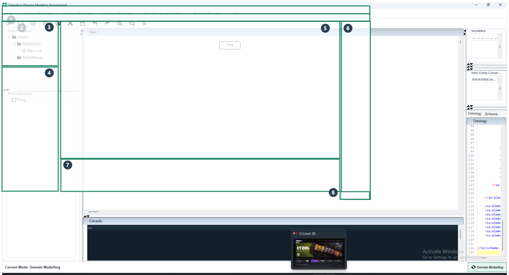
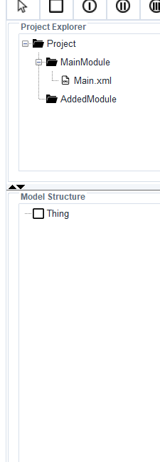
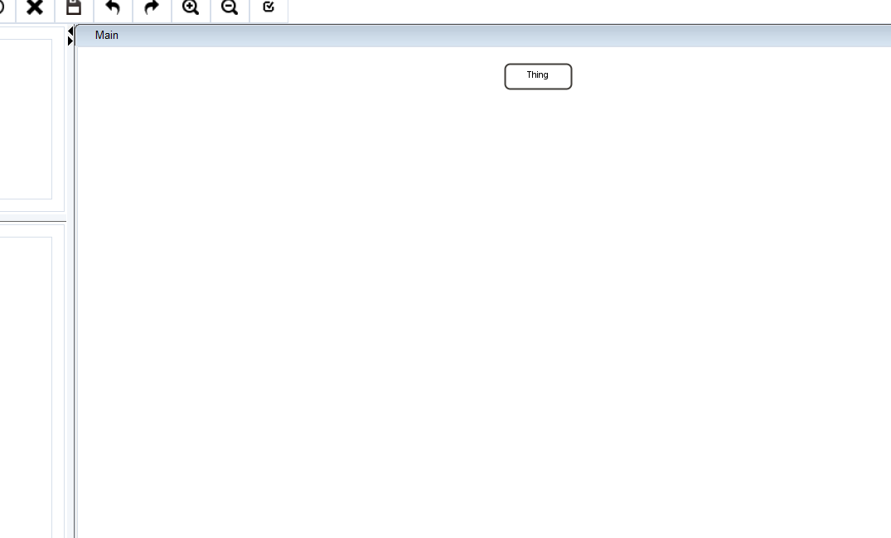

A detailed guide to the current ODME desktop application, including
project setup, domain and scenario workflows, behavior tooling, ODD
generation, sample generation, execution support, and packaged app usage.
Quick reading strategy: if you are new to ODME, start with
Main Window Tour, then read Domain Modelling,
and only after that move on to Scenario, Behavior,
and ODD sections.
Main focus: how to use the shipped desktop application and the workflows available in its menus
Where to open this manual in the app:Help → User Manual
Contents
Purpose and scope
What ODME stores and generates
Launching the application
Main window tour
Recommended end-to-end workflow
File menu and project lifecycle
Domain Modelling workflows
Scenario Modelling workflows
Behavior-related workflows
ODD generation and ODD Manager
Scenario Manager, execution, and plugins
Artifacts on disk
Troubleshooting and practical advice
1. Purpose and Scope
ODME is a desktop modeling environment for building and maintaining
Operational Design Domain (ODD) models with the
System Entity Structure (SES) formalism. In one application
you can create a structural domain model, add node metadata such as variables,
constraints, distributions, and behaviors, derive scenario-specific versions,
and generate supporting outputs for downstream analysis and automation.
This manual focuses on the current ODME application as shipped in the repository.
The screenshots and descriptions match the current UI where feasible, but exact
spacing or panel sizing may vary slightly by operating system or display scaling.
2. What ODME Stores and Generates
Artifact
What it represents
Why it matters
Project XML and graph XML
The main model structure and graph layout.
These are the core files the editors use to reconstruct the model.
.ssdvar, .ssdcon, .ssdbeh, .ssdflag
Serialized metadata for variables, constraints, behaviors, and editor state.
Without them, the tree or graph may load but side metadata may be missing.
Schema and XML outputs
Generated XML and schema material derived from the model.
Used by ODD generation, exports, and some downstream workflows.
ODD snapshots
Saved ODD manager datasets under the project odd/ directory.
Lets you preserve and export generated ODD views.
CSV sample files
Generated sample sets from ODD ranges or YAML-based workflows.
Useful for testing, batch scenario creation, and automation.
Scenario XML files
Concrete scenario outputs, often generated from CSV rows.
These are convenient handoff artifacts for later simulation or processing.
3. Launching the Application
Packaged desktop application
Open the generated ODME application folder.
Launch ODME.exe on Windows, or the packaged app on your platform.
Keep the whole application folder together; do not copy only the executable.
Run from source
Build the repository with Maven.
Run the shaded JAR or launch odme.odmeeditor.Main from your IDE.
If you change code or documentation and the packaged app still looks old, rebuild
the packaged app image. Recompiling Java classes alone does not update the packaged
desktop folder automatically.
4. Main Window Tour
ODME is organized around a synchronized tree-and-graph workspace. Most work begins
in the center graph canvas, but the left and right panels matter just as much because
they control structure browsing and metadata editing.

Annotated ODME main window. The numbered callouts correspond to the legend below.
Callout
Area
What you use it for
1
Menu bar
Global actions such as project operations, ODD tools, scenario tools, and help.
2
Toolbar
Fast graph editing actions such as add node modes, save, undo, redo, and zoom.
3
Project Explorer
Shows project files and modules so you can verify the currently loaded project layout.
4
Model Structure tree
Hierarchical structure view of the SES model; right-click here for tree-based actions.
5
Graph canvas
The main visual modeling workspace for entities, aspects, specializations, and pruning work.
6
Node metadata panels
Shows variables, behaviors, constraints, and related data for the currently selected node.
7
Bottom viewers and console
Schema, ontology, XML, and console output used during validation, generation, and debugging.
8
Mode switch/status area
Shows the active mode and lets you switch between Domain Modelling and Scenario Modelling.

The left workspace combines the Project Explorer and the model tree. Use this side
to inspect structure quickly and to perform tree-based editing via right-click actions.

The graph workspace is where you place and connect structural nodes. The tree and
the graph are kept in sync for normal SES workflows.
5. Recommended End-to-End Workflow
Step 1: create or open a project in Domain Modelling.
Step 2: build the structural SES tree on the graph canvas.
Step 3: add variables, constraints, distributions, and behaviors to the relevant entities.
Step 4: save the project and inspect generated XML or schema views.
Step 5: switch to Scenario Modelling only after the base model is stable.
Step 6: create scenarios, prune the tree, and save scenario-specific outputs.
Step 7: use ODD generation, ODD Manager, sample generation, execution, or plugins once the model is ready.
The biggest source of confusion in ODME is starting downstream tooling too early.
If something feels inconsistent, go back to the base model and verify the project
structure before editing scenarios or generating ODD content.
6. File Menu and Project Lifecycle
Save
Saves the current project state and related generated outputs. Use this frequently when
structural changes or metadata changes have been made.
Save As
Creates a renamed version of the project. ODME updates the internal project references,
generates the required files in the new project location, and saves the tree and graph.
Save as PNG
Exports the current graph canvas as an image. This is useful for reports or quick reviews.
Exit
Closes the application.
Practical project lifecycle
Use Domain Modelling → New Project for clean starts.
Use Domain Modelling → Open to load an existing project folder.
Use Save before switching modes or opening ODD tooling.
Use Save As before major experimental changes if you want a checkpoint.
7. Domain Modelling Workflows
Domain Modelling is the primary authoring mode. It is where you create the SES structure
that everything else depends on.
7.1 Start a project
Choose Domain Modelling → New Project to create a fresh model, or Open to load one.
Confirm that the project name and structure appear in the left Project Explorer.
Confirm that the model tree and graph canvas both show the same base root.
7.2 Add structure on the graph canvas
You can create nodes either from the toolbar or from graph context menus.
Blank canvas right-click: add structural SES nodes such as entity, specialization, aspect, or multi-aspect.
Toolbar add modes: place new nodes directly on the graph by choosing an add mode and then clicking.
Connect nodes: connect child nodes to a parent so the tree and graph stay synchronized.
Rename: double-click or use the node context menu rename action.
Delete branch: remove the selected node and its subtree when needed.
Node naming consistency matters. ODME relies on suffix conventions such as
Spec, Dec, and MAsp for certain flows,
exports, and pruning operations.
7.3 Use the tree view for structure edits
The left Model Structure tree mirrors the graph. Right-clicking in the tree is useful
when you want to work hierarchically rather than spatially.
Add Node: insert a child under the selected tree node.
Add Variable: add a variable directly through the tree workflow.
Delete Node: remove a node from the tree and the synchronized graph.
7.4 Add metadata to entities
Most metadata editing happens by selecting an entity node in the graph.
Add Variable: right-click an SES graph node and choose Add Variable.
Add Behaviour: right-click an SES graph node and choose Add Behaviour.
Add Constraint: available on aspect-related nodes where constraint logic is valid.
Edit from right-side tables: select the node to refresh the data panels, then double-click an entry to edit it.
7.5 Delete or update metadata
Metadata
How to add it
How to change it
How to delete it
Variable
Node context menu or tree popup
Double-click variable entry in the variable table
Node context menu: delete one variable or delete all variables
Behaviour
Node context menu: Add Behaviour
Double-click the behavior table entry
Node context menu: Delete Behaviour or Delete All Behaviours; leaving the edited text empty also deletes that behavior
Constraint
Constraint-related node actions
Constraint table edit flow
Delete through the node context menu or the constraint table workflow
7.6 Import and export support
Import Template: load a reusable project template into ODME.
Save as Template: export the current model as a reusable XML-oriented template.
Import From Cameo: bring in external model content from Cameo-oriented workflows.
8. Scenario Modelling Workflows
Scenario Modelling is used after the base SES model is ready. In this mode the focus is
no longer on designing the full domain tree, but on deriving and refining scenario-specific
structures.
8.1 Switch into Scenario Modelling
Save the project first.
Use the mode switch in the bottom-right area to change the active mode.
Create or open a scenario using the scenario menu options.
8.2 Create or open a scenario
Scenario Modelling → Save Scenario: create a named scenario and write it into the project scenario store.
Scenario Manager → Scenarios List: open an existing scenario from the project.
8.3 Prune the model
In scenario mode, ODME lets you prune branches from the structural model to create a
scenario-specific version. This is how you move from a full SES description to a more
concrete PES/scenario representation.
If a prune result looks wrong, return to Domain Modelling and fix the base structure first.
Scenario Modelling works best when it is derived from a clean, stable project model.
9. Behavior-Related Workflows
ODME supports behavior data in two places: as behavior metadata attached to entities in
the main domain model, and as a dedicated behavior modeling workflow that lets you build
behavior trees for scenario-linked entities.
9.1 Entity behaviors in Domain Modelling
Open a project in Domain Modelling.
Right-click an entity node in the SES graph.
Choose Add Behaviour to attach a behavior name to that entity.
Select the entity again to refresh the right-side behavior table.
Double-click a behavior entry to update it.
To delete one behavior, either use Delete Behaviour from the entity context menu or clear the text in the edit dialog.
To delete all behaviors for an entity, use Delete All Behaviours.
9.2 Sync Behaviour from the menu
The Behavior Modelling → Sync Behaviour action opens the scenario
list for available behavior work. This is the entry point to the separate behavior tree editor.
9.3 Behavior tree editor
Once a scenario is chosen, ODME opens the behavior modeling window. That window includes:
a behavior tree on the left
a behavior graph editor on the right
toolbar tools for selector, decorator, sequence, parallel, delete, save, undo, redo, zoom, and merge
9.4 Behavior graph actions
Select a leaf behavior in the left behavior tree, then place it into the graph.
Add decorators, selectors, sequences, and parallel nodes from the toolbar.
Double-click a decorator to set or change its condition.
Right-click an entity behavior node in the behavior graph to add behavior attributes.
Select a behavior entity in the graph to populate the attribute table in the left panel.
Use Save Graph to persist the behavior graph and generate behavior XML.
Use Merge to merge behavior output with the XSD-related XML flow.
Behavior modelling depends on having valid behavior data and scenario context already available.
If the behavior editor opens but looks empty, check that the project and scenario contain the
expected .ssdbeh data.
10. ODD Generation and ODD Manager
The Operation Design Domain menu is used after the structural model and
metadata are in good shape.
Generate OD
Opens the current ODD representation derived from the project and prepares the data
needed by the manager and export workflows.
ODD Manager
Inspect saved ODD snapshots.
Edit or review generated ODD content.
Export ODD data to XML or YAML.
Use ODD ranges as the basis for sample generation workflows.
11. Scenario Manager, Execution, and Plugins
Scenario Manager menu
Scenarios List: open and manage project scenarios.
Execution: open the execution window for XML/YAML/Python-oriented workflows.
Feedback Loop: reserved for scenario-related workflow extensions.
Generate Samples: launch the constrained sample generation panel.
Generate Samples
This workflow supports YAML-based definitions, Latin Hypercube Sampling for continuous
variables, constraint-aware acceptance logic, and CSV output suitable for downstream use.
Generate Scenario from CSV
Under Save Scenario, ODME includes Generate Scenario → From CSV.
This converts CSV rows into individual scenario XML files.
Execution window
Load XML or YAML content.
Translate model outputs into Python-friendly data structures.
Load or edit Python scripts.
Run scripts and review console output.
Run Python Plugin
Choose a Python script under Tools → Run Python Plugin....
ODME passes the current project context to the plugin runner.
Output appears in the application console.
12. Artifacts on Disk
Location
Typical contents
Project root
Main project XML, graph XML, and serialized sidecar files such as .ssdvar, .ssdcon, .ssdbeh, and .ssdflag.
Scenario folders
Scenario-specific XML, behavior, and generated files.
odd/ inside the project
Saved ODD manager outputs.
Generated CSV output
Sampling results used for scenario generation or external analysis.
When copying a project between machines or ODME versions, copy the full project folder.
Partial copies are the most common reason for models loading without their variables,
behaviors, or constraints.
13. Troubleshooting and Practical Advice
The packaged application does not show the latest code or manual
Rebuild the packaged app image, not only the Java classes.
Open the freshly generated application folder, not an older copy elsewhere on disk.
Help → User Manual opens nothing
Make sure the packaged app still contains the bundled docs/manual.pdf resource.
If PDF opening fails, ODME falls back to the bundled HTML manual.
Check that the desktop environment allows the app to open local files in the system viewer.
The model opens but variables, behaviors, or constraints are missing
Verify that the expected .ssd* sidecar files are present next to the project data.
Check that you opened the correct project root folder.
If the issue appears in behavior mode, verify the scenario-specific .ssdbeh file path as well.
Behavior editor looks empty or incomplete
Make sure the selected scenario actually has synchronized behavior data.
Check that behaviors were attached to entities first from the domain model when required.
Save the project before opening behavior workflows.
Advanced tooling feels harder than the base model editor
That is normal. ODD generation, sample generation, execution, and plugins make much more
sense after the structural model and scenario workflows are already comfortable.
Final Advice
ODME works best when used in layers:
first the structural model
then node metadata
then scenarios
then ODD and downstream automation
If you keep that order, the menus, editors, and generated artifacts line up naturally.
If anything becomes confusing, go back one layer and verify the foundation first.